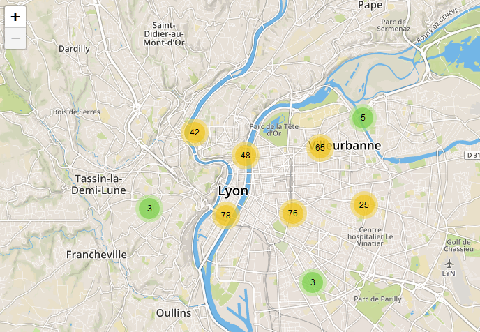
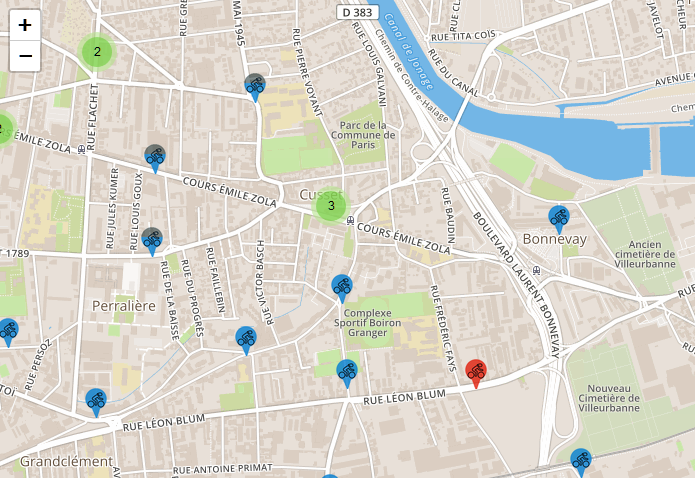
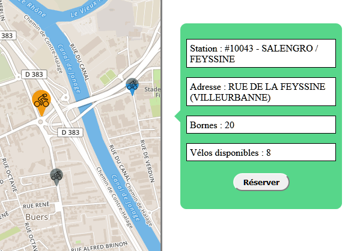
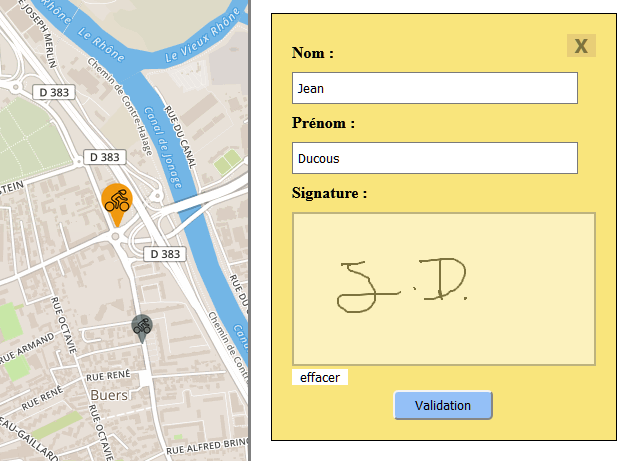
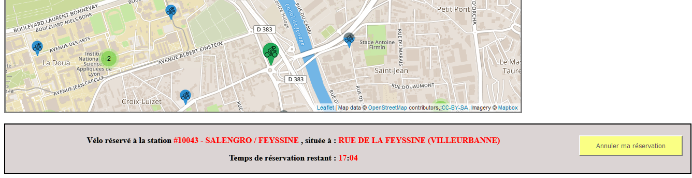

Bienvenue sur Velo'v !
Le site de réservation en ligne des vélos de la ville de LyonSans plus attendre, nous allons vous expliquer comment effectuer votre réservation en ligne.
Ci-dessous, vous trouverez une carte de Lyon avec des ronds colorés comprenant des nombres. Les nombres sont le nombre de stations se trouvant dans la zone comprise par le rond coloré. Cliquez sur un de ces ronds pour vous approcher de la zone.
Vous allez voir apparaître les stations velo'v présentes dans cette zone et indiquée par des ronds de différentes couleurs. Nous allons vous expliquer dans le diaporama suivant à quel état de la station correspond chaque couleur.
Le vélo bleu indique une station en état de marche ayant des bornes disponibles pour garer son vélo ainsi qu'au moins 4 vélos en état de réservation.
Station disponible
Le vélo mi-bleu mi-gris indique une station en état de marche ayant entre 1 et 3 vélos disponibles à la réservation.
Station presque vide (entre 1 et 3 vélos)
Le vélo bleu foncé indique une station en état de marche étant complète , et donc n'ayant plus de place pour venir y garer un vélo.
Station complète
Le vélo gris indique une station en état de marche, mais n'ayant pas de vélos disponibles à la réservation. Vous pouvez néanmoins y garer votre vélo.
Station vide
Le vélo rouge indique une station n'étant pas en état de marche. Aucune action n'y est possible.
Station indisponible
En cliquant sur un de ces indicateurs de station, vous verrez l'icône devenir orange. A droite de la carte s'affiche alors un panneau vous donnant plus de précisions sur la station. Vous pouvez appuyer sur le bouton "réserver" de ce panneau pour passer à l'étape suivante.
Les indicateurs rouge et gris n'ayant pas de vélos disponibles n'affichent pas de panneaux. Vous accédez à un formulaire. Il vous suffit d'entrer votre nom, votre prénom et de signer , comme dans l'exemple. Appuyez ensuite sur le bouton de validation.
L'icône devient verte et une barre s'affiche en dessous de la carte dans laquelle vous pourrez voir les informations de la réservation effectuée ainsi que le temps restant. Vous avez 20 minutes pour prendre votre vélo après l'avoir réservé.
Vous ne pouvez pas effectuer plusieurs réservations en même temps. Une nouvelle réservation annulera votre réservation précédente. Vous pouvez également annuler manuellement votre réservation en appuyant sur le bouton à droite de la barre C'est tout ! Toute l'équipe Vélo'v vous souhaite une bonne réservation.